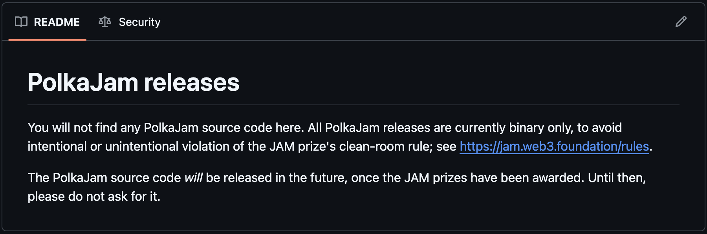
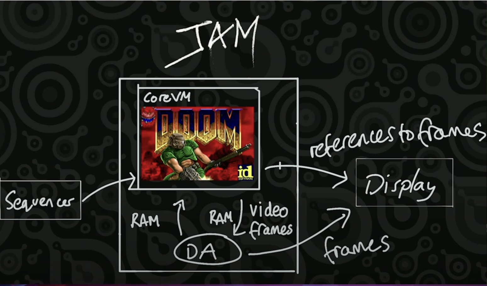
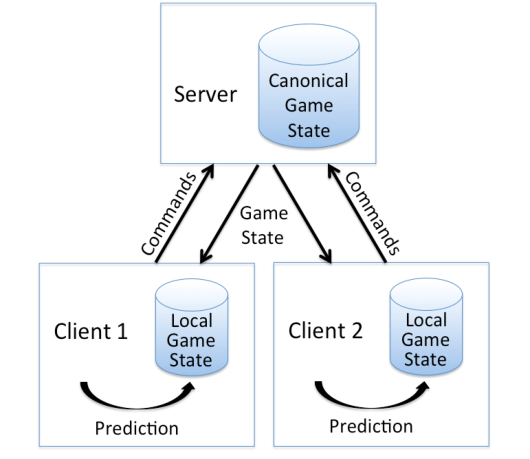

<!DOCTYPE html>
<html lang="en">

<head>
  <meta charset="utf-8" />
  <meta name="viewport" content="width=device-width, initial-scale=1.0, maximum-scale=1.0, user-scalable=no" />

  <title>JAM CoreVM</title>
  <link rel="icon" href="./../../assets/favicon.svg" />
  <link rel="shortcut icon" href="./../../assets/favicon.png" />
  <link rel="stylesheet" href="./../../dist/reset.css" />
  <link rel="stylesheet" href="./../../dist/reveal.css" />
  <link rel="stylesheet" href="./../.././assets/styles/PBA-theme.css" id="theme" />
  <link rel="stylesheet" href="./../../css/highlight/shades-of-purple.css" />

  <link rel="stylesheet" href="./../.././assets/styles/custom-classes.css" />

</head>

<body class="site">
  <header class="site-header">
    <!-- This logo is a link only on the watching server, not the production build -->
    <a href="">
      
    </a>
  </header>
  <main class="reveal">
    <article class="slides">
      <section  data-markdown><script type="text/template">

# JAM

## Disclaimers & CoreVM Demo
</script></section><section ><section data-markdown><script type="text/template">
## Polkadot Tech

1. Framework: Substrate
1. VM: WASM
1. Governance: OpenGov
1. Authority: Nominated Proof of Stake
1. Block Production: BABE
1. Sharding: ELVES
1. Shard Interoperability: XCMP + XCM
1. Finality: GRANDPA, BEEFY
1. Scheduling: Agile Coretime
1. Database: RocksDB/ParityDB
1. Encoding: SCALE
1. Networking: LibP2P/LiteP2P
1. APIs: Polkadot.JS / Polkadot API (PAPI)
</script></section><section data-markdown><script type="text/template">
# Polkadot Tech

1. Framework: Substrate ✅ (parachains only)
1. VM: WASM ❌ -> PVM ⚡ <!-- .element: class="fragment" data-fragment-index="1" -->
1. Governance: OpenGov ✅ <!-- .element: class="fragment" data-fragment-index="2" -->
1. Authority: Nominated Proof of Stake ✅ <!-- .element: class="fragment" data-fragment-index="3" -->
1. Block Production: BABE ❌ -> Safrole ⚡ <!-- .element: class="fragment" data-fragment-index="4" -->
1. Sharding: ELVES ✅ <!-- .element: class="fragment" data-fragment-index="5" -->
1. Shard Interoperability: XCMP 🛠️ + XCM ✅ <!-- .element: class="fragment" data-fragment-index="6" -->
1. Finality: GRANDPA, BEEFY ✅ <!-- .element: class="fragment" data-fragment-index="7" -->
1. Scheduling: Agile Coretime ✅ <!-- .element: class="fragment" data-fragment-index="8" -->
1. Database: RocksDB/ParityDB ❓ <!-- .element: class="fragment" data-fragment-index="9" -->
1. Encoding: SCALE ❌ -> "GP Codec" ⚡ <!-- .element: class="fragment" data-fragment-index="10" -->
1. Networking: LibP2P/LiteP2P ❓ <!-- .element: class="fragment" data-fragment-index="11" -->
1. APIs: Polkadot.JS / Polkadot API (PAPI) 🛠️ <!-- .element: class="fragment" data-fragment-index="12" -->
</script></section></section><section  data-markdown><script type="text/template">
# JAM Motivations

- Protocol clean-up
- Client diversification <!-- .element: class="fragment" data-fragment-index="1" -->
- Backwards compatibility <!-- .element: class="fragment" data-fragment-index="2" -->
- Protocol generalisation <!-- .element: class="fragment" data-fragment-index="3" -->
  - More Open DA <!-- .element: class="fragment" data-fragment-index="4" -->
  - Less compute opinionation (not just parachains) <!-- .element: class="fragment" data-fragment-index="5" -->
- Improved synchronous composability <!-- .element: class="fragment" data-fragment-index="6" -->
</script></section><section  data-markdown><script type="text/template">
# JAM Services

- JAM Chain
  - Bootstrap Service <!-- .element: class="fragment" data-fragment-index="1" -->
  - CoreChains Service (Docker for parachains) <!-- .element: class="fragment" data-fragment-index="2" -->
  - CoreVM Service (Docker for generic computation) <!-- .element: class="fragment" data-fragment-index="3" -->
  - CorePlay Service (Smart contract manager service) <!-- .element: class="fragment" data-fragment-index="4" -->
</script></section><section  data-markdown><script type="text/template">
# JAM Binaries

https://github.com/paritytech/polkajam-releases


</script></section><section ><section data-markdown><script type="text/template">
# CoreVM

## Docker for generic computation on JAM
</script></section><section data-markdown><script type="text/template">
# Doom Demo
</script></section><section data-markdown><script type="text/template">
# Install Dependencies

```bash
# (CoreVM monitor uses SDL2 library that needs
# to be installed in a platform-specific way.)

# Ubuntu
apt-get install libsdl2 libsdl2-ttf

# MacOS
brew install SDL2 SDL2_ttf

# On MacOS you might also need to add SDL2 to the library search path
# (e.g. if Homebrew is installed in a directory other than `/opt/homebrew`).
export DYLD_LIBRARY_PATH=<homebrew-dir>/lib

```
</script></section><section data-markdown><script type="text/template">
# Run Doom

```bash
# Run local testnet.
./polkajam-testnet

# Create CoreVM.
./jamt vm new ./doom.corevm 1000000000

# Run CoreVM builder (SERVICE_ID is in jamt's output).
./corevm-builder --temp --chain dev --gas 1000000000 SERVICE_ID

# Run CoreVM monitor (SERVICE_ID is in jamt's output).
./corevm-monitor SERVICE_ID

# You can use `export RUST_LOG=corevm` for debugging.
```
</script></section><section data-markdown><script type="text/template">
# Enjoy Doom

https://www.youtube.com/watch?v=hJcw5FMSjQs&t=140s
</script></section></section><section ><section data-markdown><script type="text/template">
# Unpacking Doom

What actually happens here?
</script></section><section data-markdown><script type="text/template">
# Unpacking Doom

- Binary upload
  - The Doom binary (with assets) is uploaded via jamt vm new
  - Stored on-chain as an immutable preimage
</script></section><section data-markdown><script type="text/template">
# Unpacking Doom

- Binary upload
- Builder start-up
  - Builder generates packages referencing the binary + VM state (instruction counter, registers, memory pages)
  - Sent to CoreVM service for execution
</script></section><section data-markdown><script type="text/template">
# Unpacking Doom

- Binary upload
- Builder start-up
- Execution
  - Service executes binary step-by-step (“refine”), handles interrupts
  - Produces video/audio frames, console output
  - Stops when gas runs out or unhandled interrupt
</script></section><section data-markdown><script type="text/template">
# Continuations


</script></section><section data-markdown><script type="text/template">
# Continuations


</script></section><section data-markdown><script type="text/template">
# Continuations


</script></section><section data-markdown><script type="text/template">
# Continuations


</script></section><section data-markdown><script type="text/template">
# Continuations


</script></section><section data-markdown><script type="text/template">
# Unpacking Doom

- Binary upload
- Builder start-up
- Execution
- Data dump
  - When execution stops or is interrupted service exports modified memory pages
  - Accumulate verifies correctness: imported pages must be known, outputs consistent
</script></section><section data-markdown><script type="text/template">
# Unpacking Doom

- Binary upload
- Builder start-up
- Execution
- Data dump
- Monitor
  - Fetches exported segments
  - Renders frames, audio, console messages (with ~6s slot delay)
</script></section><section data-markdown><script type="text/template">
# Unpacking Doom

- Binary upload
- Builder start-up
- Execution
- Data dump
- Monitor
- Builder again
  - Builder consumes output, imports new memory pages
  - Generates next package → continues execution loop
</script></section><section data-markdown><script type="text/template">
# Unpacking Doom

- Binary upload
- Builder start-up
- Execution
- Data dump
- Monitor
- Builder again

<aside class="notes"><p>Nightly build uses CoreVM which is a bit old. As such it has a delay of 3 slots and it doesn’t have access to the file system. In the newer version there is no need to bundle the binary with the game assets, you can simply upload the whole directory as a preimage and then access it as a file tree directly from the program (i.e. the same way as any application accesses files).</p>
</aside></script></section><section data-markdown><script type="text/template">
# Unpacking Doom


</script></section><section data-markdown><script type="text/template">
# Unpacking Doom

When and where is it actually played?


</script></section></section><section  data-markdown><script type="text/template">
# Questions
</script></section>
    </article>
  </main>

  <script src="./../../dist/reveal.js"></script>

  <script src="./../../plugin/markdown/markdown.js"></script>
  <script src="./../../plugin/highlight/highlight.js"></script>
  <script src="./../../plugin/zoom/zoom.js"></script>
  <script src="./../../plugin/notes/notes.js"></script>
  <script src="./../../plugin/math/math.js"></script>

  <script src="./../../assets/plugin/mermaid.js"></script>
  <script src="./../../assets/plugin/mermaid-theme.js"></script>

  <script src="./../../assets/plugin/chart/chart.js"></script>
  <script src="./../../assets/plugin/chart/chart.min.js"></script>

  <script src="./../../assets/plugin/tailwindcss.min.js"></script>

  <script>
    function extend() {
      var target = {};
      for (var i = 0; i < arguments.length; i++) {
        var source = arguments[i];
        for (var key in source) {
          if (source.hasOwnProperty(key)) {
            target[key] = source[key];
          }
        }
      }
      return target;
    }

    // default options to init reveal.js
    var defaultOptions = {
      controls: true,
      progress: true,
      history: true,
      center: true,
      transition: 'default', // none/fade/slide/convex/concave/zoom
      slideNumber: true,
      mermaid: {
        startOnLoad: false,
        logLevel: 3,
        theme: 'base',
        themeVariables: {
          primaryColor: purple,
          primaryTextColor: white,
          primaryBorderColor: pink,
          lineColor: pink,
          secondaryColor: lightPurple,
          tertiaryColor: lightPurple,
        },
      },
      chart: {
        defaults: {
          color: 'lightgray', // color of labels
          scale: {
            beginAtZero: true,
            ticks: { stepSize: 1 },
            grid: { color: "lightgray" }, // color of grid lines
          },
        },
        line: { borderColor: ["#ccc", "#E6007A", "#6D3AEE"], "borderDash": [[5, 10], [0, 0]] },
        bar: { backgroundColor: ["#ccc", "#E6007A", "#6D3AEE"] },
      },
      plugins: [
        RevealMarkdown,
        RevealHighlight,
        RevealZoom,
        RevealNotes,
        RevealMath,
        RevealMermaid,
        RevealChart
      ]
    };

    // options from URL query string
    var queryOptions = Reveal().getQueryHash() || {};

    var options = extend(defaultOptions, {"width":1400,"height":900,"margin":0,"minScale":0.2,"maxScale":2,"transition":"none","controls":true,"progress":true,"center":true,"slideNumber":true,"backgroundTransition":"fade"}, queryOptions);
  </script>


  <script>
    Reveal.initialize(options);
  </script>
</body>

</html>
